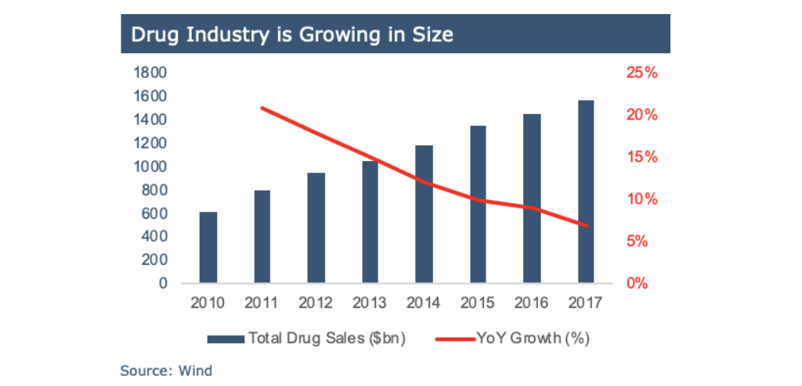
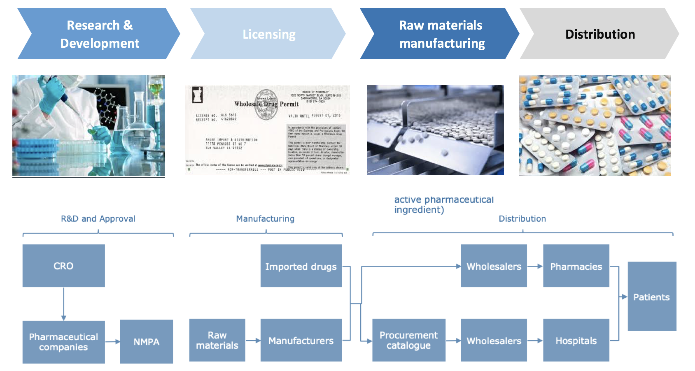
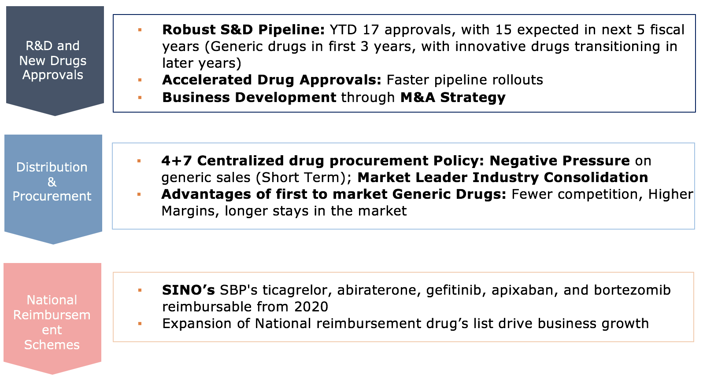
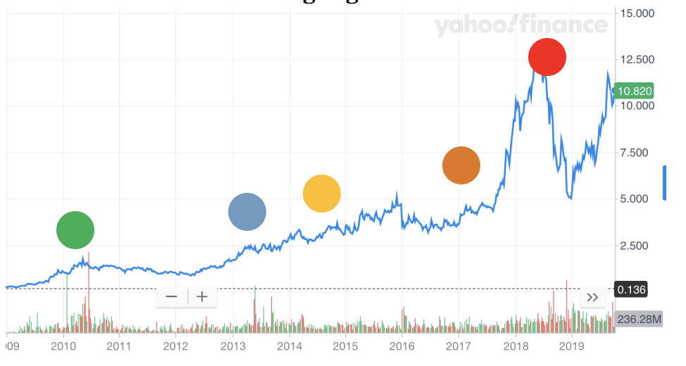

The Economist - China’s pharmaceuticals industry is growing up

Like most countries, there are private and public hospitals. Private hospitals take up more than 60% of the total hospitals. As of February 2019, there had been a total of 33,000 hospitals in China, an increase of 1,866 in the same period of 2018. In the first two months of 2019, there were 550 million patient visits to hospitals in China, up 3.2% year on year. Given that the aging population is on the rise, it is believed that the number of patients would continue to grow and the consumer need towards drugs would be increasing continuously. In general, a 3-tier system is used for public hospitals, namely Primary, Secondary or Tertiary institutions. This indicates that the primary customer of pharmaceutical companies, especially the drug manufacturer, would be hospitals among these three tiers.
As the Chinese have a growing ability to self-medicate, we are expecting an increase in the number of OTC retail pharmacies. Indicating that retail pharmacies would become a more important point of sales to the companies. By the end of 2018, there had been 5,985 drugstore chains in possession of 463,200 retail stores in China, of which 242,560 were chain stores, taking up 52.4% of the total, up by 2 percentage points on an annualized basis; 88.3% of stores were directly run by retailers themselves; 72% were designated medical insurance stores. In China, leading drug retail chains include Yunnan Hongxiang Yixintang Pharmaceutical Co, Ltd, Dashenlin Pharmaceutical Group Co, Ltd, LBX Pharmacy, Yifeng Pharmacy, Sinopharm, China Nepstar Chain Drugstore, Gansu Zhongyou Health Medicine Co, Ltd, Suzhou Quanyi Health Drugstore Chain Co, Ltd, Chongqing Tong Jun Ge Co, Ltd. and Yunnan Jianzhijia Health Drugstore Chain Co, Ltd, among which Chongqing Tong Jun Ge Co, Ltd. has 10,575 drugstores, the most among all retail chains, and Yunnan Hongxiang Yixintang Pharmaceutical Co, Ltd. boasts the largest number of direct-sale stores, numbering 5,758, all of which are directly operated by the company. Securing a tight relationship with the retailers above would be particularly important especially towards the wholesaler, as they have a high market share and one contract might guarantee presence in many shops.
The exports of pharmaceutical companies have been increasing steadily. (Graph 1) Chinese drugmakers are expected to increase exports and physical presence in higher-reward African countries especially.

There are 3 main pillars on the China Healthcare industry where medical services and drugs accounted for most of the total market size, 55% and 37% respectively. Medical Devices only accounts for 8% of total market size of whole China Healthcare Industry.

China Healthcare Industry is having strong growth potential. The expected growth in the next 3 years: Drugs (~5-10% ), Medical Devices (~15%), Medical Services (~10-15%) The main driver for the growth comes from the increase in national income, increase in country medical expenses & per capita medical expense. Moreover, there is a changing mindset that people are perceiving healthcare is a necessity. It is also part of the national strategy to ensure the good quality healthcare service in China.
Drug industry is growing in size without a market ceiling. The YoY growth of total drug sales from 2016 to 2017 is around 7%. It reflects that the growth in drug sales in China is still robust and is expected to continue in the coming years.
Although drug industry is growing, the development of new drugs has been lackluster in China. The new drug as % of total volume is lowest in China when compared with U.S, Japan and Taiwan. New drugs account for 15% of total drugs sales in 2017 in China, expecting the figure to increase to 30% in 2023 and 50% in 2028. It reflects the strong growth potential for the new drugs in China.
There are several seasons for low new drugs volume.
1. It is still an early stage of development in China, which lacks technology and expertise.
2. There is a slow IND/NDA process which makes US/Europe drugs fail to enter China hindering innovation in new drugs.
3. There is a slow update in China’s medical catalog, affecting rollout of new drugs


The major life stage of a drug includes Research and development, Raw materials manufacturing, and distribution, shown in the graph below. Along the value chain, the key players include pharmaceutical companies, manufacturers, wholesalers, hospitals, pharmacies, and ultimately delivered to end patients.
Developing a new prescription medicine that gains marketing approval is estimated to cost drug makers $2.6 billion on average. The overall chance that a drug entering clinical development will be approved for marketing is just under 12% in China.
(Source: NMPA)
The value chain of China’s pharmaceutical industry includes R&D, Manufacturing, Middlemen distributors, and end distribution.

| Name | Description |
|---|---|
| Alternative medicines(s) | Alternative medicines which are selected by the bid evaluation committee of local government |
| Awareness rate | The proportion of people among those with the disease who had previously been diagnosed by a medical practitioner |
| Capsule(s) | A solid dosage form in which medicine is enclosed in a hard or soft soluble container, usually in a form of gelatin |
| Chemical medicines | Medicines created by means of chemistry or obtained by chemical processes |
| Chronic kidney disease | The slow loss of kidney function over time |
| Chronic kidney failure | When the kidney is severely impaired and almost non- functionable to keep the person alive |
| Class I hospitals | Local hospitals with small capacity designated as class I hospitals by the Ministry of Health hospital classification system that provide one community with elementary medical services |
| Class II hospitals | Regional hospitals with minimum capacity designated as class II hospitals by the Ministry of Health hospital classification system that provide multiple communities with integrated medical services and undertake certain educational and scientific research missions |
| Chemical medicines | Medicines created by means of chemistry or obtained by chemical processes |
| Class III hospitals | Multi-regional hospitals with large capacity designated as class III hospitals by the Ministry of Health hospital classification system that provide multiple regions with high quality professional medical services, undertake higher education and scientific research initiatives and are followed by lower ranked Class II and Class I hospitals |
| CT | Computer tomography, an imaging method that uses x-rays to produce a detailed picture of a cross-section of the body |
| Dialysis | D process of cleansing the blood by passing it through a special device. It is necessary when the kidney is not able to filter the blood |
| Evidence-based practice | The use of mathematical estimates of the risk of benefit and harm, derived from high-quality research on population samples, to inform clinical decision-making in the diagnosis, investigation or management of individual patients |
| “GAP” or “Good Agricultural Practices” | Good Agricultural Practices, which are guidelines that describe the general principles and provide technical details for the cultivation of medicinal plants. They also describe quality control measures |
| “Generic Medicines” | Medicines which have been launched in the PRC, being those medicines other than the New Medicines |
| “GMP” or “Good Manufacturing Practices” | Good Manufacturing Practices, which are guidelines and regulations issued to ensure that pharmaceutical products within those guidelines and regulations are consistently produced and controlled to the quality and standards appropriate for their intended use |
| Granule(s) | A form in which medicines may be delivered for oral ingestion, produced by missing extracted active medicinal ingredients with supplemental materials or powdered medicines which are formed into dry granules |
| “GSP” or “Good Supply Practice” | Good Supply Practices, which are guidelines and regulations issued as part of quality assurance to ensure that pharmaceutical distribution enterprises distribute pharmaceutical products in compliance with those guidelines and regulations |
| High throughput screening | A technology that employs automation and robotics to conduct thousands of biological assay experiments within a short period of time and can be used to screen potential medicine candidates |
| “iu” | International unit, a unit of measurement for the amount of a substance, based on biological activity or effect |
| Medical institutions | Institutions created for the practice of medicine, and for the purpose of this prospectus, exclude hospitals |
| New Medicines | Medicines which have never been launched in the PRC market previously as defined under the Registration Measures |
| Oral solution | A form of medicine in which medicine is dissolved in a liquid and to be taken orally |
| Prescription medicine(s) | Medicines which may be prescribed only by qualified medical practitioners |
| Prevalence rate | The proportion of people in a population who have a particular disease at a specified point in time, or over a specified period of time |
| “Registration Measures” | Measures on the Administration of Pharmaceutical Products Registration (理 ), promulgated by the CFDA on 10 July 2007 and effective from 1 October 2007 |
| Retail price | The price at which pharmaceutical products are sold to the end users |
| Soft capsule(s) | A form in which medicines are produced by mixing extracted active medicinal ingredients with supplemental materials so as to achieve uniform concentration of medicinal ingredients, which are sealed in a soft gelatine capsule |
| Successful bidding price | The successful bidding price at which non-profit-making hospitals and other non-profit-making medical institutions purchase the pharmaceutical products selected at the collective statutory tender process |
| Tablet(s) | Dose of medicine in the form of a small pellets |
| Western medicines | Encompasses a range of medicines theories and practices evolved to maintain and restore human health, including diagnosis and treatments derived from dissection, microscopic analysis and chemical derivation, other than Chinese medicines |
| Wholesale price | The price at which pharmaceutical manufacturers sell their pharmaceutical products to distributors, hospitals, medical institutions or pharmacies |
Price of drugs is drop expected to continue in the future with procurement continue to centralize
4+7 centralized procurement was initially carried out in the 4 centrally-controlled cities and 7 provincial capitals. With procurement quantity being specified before bidding and negotiation, drug makers need to confirm the exact prices based on the predetermined volume. Some concrete examples include the ancellation of exclusive bidding, and procurement contract has to be shared by up to 3 drug makers.
Centralization of procurement leads to a change in payment mechanism and finally a decline in drug prices.We estimate procurement rules will be optimized gradually as this coverage expansion of centralized procurement will guide future tendering. This would results in a fundamental change as it will take a shorter time for generic drug price to peak given the deteriorating competitive landscape, companies need to focus on strengthening R&D efficiency while increasing the varieties in the pipeline.
The alternation of NRDL would optimize the medical insurance payment, changing the interest and business prospects of some companies.
The National Healthcare Security Administration adjusts the NRDL by giving priority to national essential drugs, drugs for major diseases such as cancers and rare diseases, drugs for chronic and pediatric diseases and emergency use drugs. This adjustment saw both additions and deletions, which should put medical insurance funds to more efficient use and optimize the medical insurance payment structure in ways that have a profound influence on industry transformation.


 Sino biopharma is an industry leader for generic drugs and specialize in liver related diseases. Through its continuous reformation and innovation in medical, pharmaceutical, and health fields, it has grown in size with more than 20 shareholding companies.
Sino biopharma is an industry leader for generic drugs and specialize in liver related diseases. Through its continuous reformation and innovation in medical, pharmaceutical, and health fields, it has grown in size with more than 20 shareholding companies.
It has a professional promotion team consisting of more than 10,000 employees, and nearly 1,000 kinds of products, covering all types of medical institutions at all levels across the country. We have launched more than 30 products with annual sales revenue of over 100 million CNY. Especially in the field of liver diseases, a number of major products have annual sales revenue exceeding 1 billion CNY, accounting for 24% in the overall sales income of the liver disease market in China.
Sino Boppharama has a competitive drug portfolio and robust R&D pipeline, with R&D spending percentage topping peers, as seen from the graph above. Find out more at Sino Biopharma’s website at: http://www.sinobiopharm.com/en/#/
Sino Biopharma’s competitive edge is developed by three main pillars, including a diverse R&D portfolio, strength in product distribution and rollout, participating in national reimbursement schemes, and having first to market advantages. These competitive edges has enabled Sino Biopharma to have higher margins, fewer industry competition, and a longer market shelf life.

2010: Admitted into HSI Consumer Goods and HSI Small Cap constituent stock
2014: Acquired Karoliska Development and became largest stakeholder
2015: Acquired LifeBond, an Israel based medical device company, became 2nd largest shareholder
2017: Acquired 42% stake of Qingdao Chia Tai
2018: 1 Government Policy on GPO (Group purchasing regulation) impact on pharma industry 2 Acquired 24% of Beijing Tide 3 Admitted into HSI Constituent stock
Hengrui Medicine is a pharmaceutical company based in China focusing on research, development, manufacturing, and commercialization of innovative and high-quality healthcare products.


 Phase 1: 1997-2008
Phase 1: 1997-2008
Focused on fast follow, aiming to replace foreign products
Phase 2: 2008-2014
Commitment to innovative R&D (me better) and “go global”
Phase 3: 2014-2018
Market generic drugs to overseas market; focus on genuinely innovative drugs
The Economist - China’s pharmaceuticals industry is growing up

The Economic Times - Chinese growth shot’s some years away for pharma companies

China Daliy - Pharma companies undergoing critical transformation

Pharmaceutical Technology - Characterising Eastern China’s pharmaceutical manufacturing market: Shandong and Jiangsu
Express Pharma - Is China the next land of opportunity?